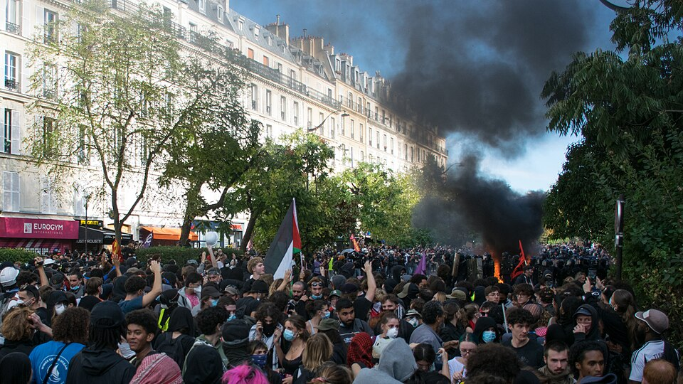
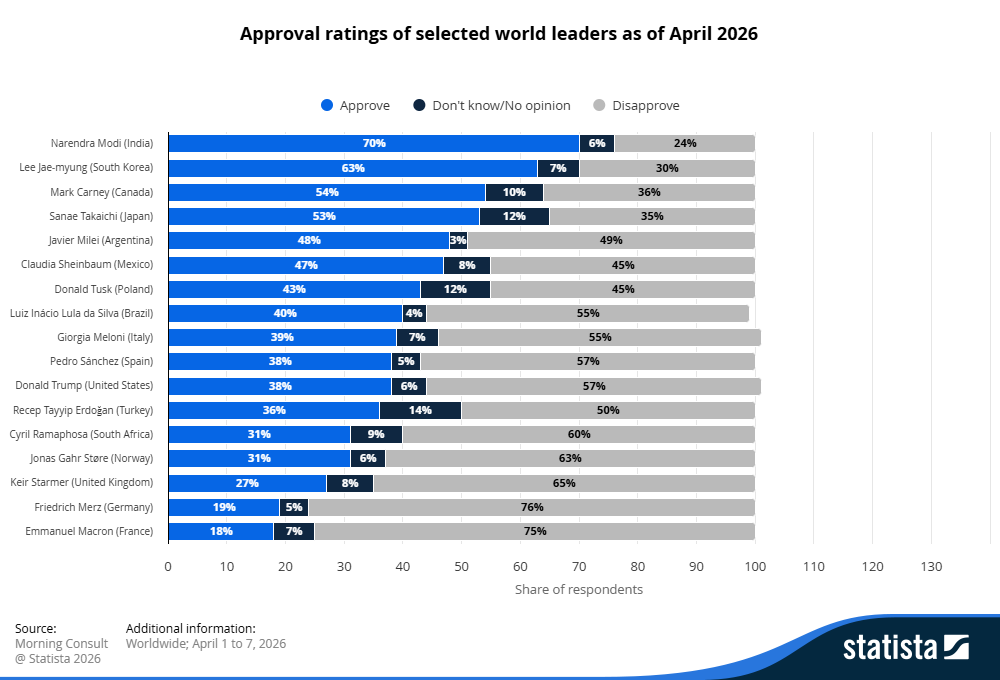
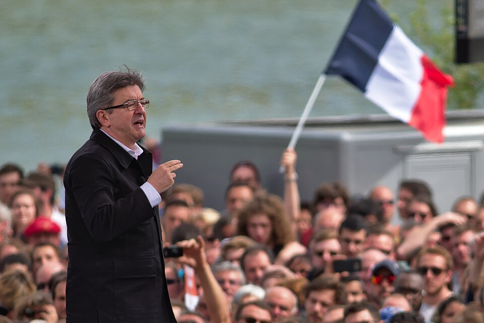

Cientos de miles de adolescentes han tomado las calles francesas. Impulsados por el estado de la educación pública, la violenta contestación del gobierno ha avivado el fuego de un movimiento que no para de conseguir adeptos. A solo 6 meses de las elecciones presidenciales y con los presupuestos en el horizonte, es posible que este sea el último clavo en el ataúd de uno de los gobiernos más inestables e impopulares de Europa.
Las escuelas a examen
El 15 de septiembre se vivieron los primeros compases de estas protestas. Poco después del comienzo del curso escolar, varios centros, especialmente en zonas no pudientes, fueron bloqueados por sus estudiantes en protesta por sus condiciones materiales y la carga de estudio. Estos fueron unos eventos iniciales sin demasiada relevancia, pero dos días después el personal docente realizó una huelga por sus condiciones laborales a la que los estudiantes se unieron. Las imágenes se viralizaron velozmente y diversas réplicas ocurrieron alrededor del país. No obstante, fue la violencia de algunos episodios y la fuerte respuesta de las fuerzas del estado contra los manifestantes la que provocó la generalización de las manifestaciones.
A partir del 25 de septiembre, las protestas dejaron de estar focalizadas y se extendieron por todo el país. Marsella, Nantes, Lyon, París. Las huelgas se han reproducido en todas ellas paralelamente a que la publicación del informe PISA pusiera en el debate público el estado de la educación francesa tras un descenso histórico. Para principios de octubre, más de un cuarto de los centros educativos del país vieron protestas, al menos cuatrocientas escuelas fueron cerradas, veinticuatro incendiadas y casi siete mil personas detenidas, más del 80% menores. Sin embargo, la tensión aumentó aún más cuando el 5 de octubre un chico de 15 años perdió una mano al coger una granada aturdidora lanzada por los antidisturbios.
A los estudiantes se han unido familiares, profesores, sindicatos, figuras políticas y personajes públicos como Greta Thunberg. En este momento, la protesta ha crecido más de lo que medio mes atrás se esperaba y las comparaciones con los Chalecos Amarillos y con el Mayo del 68 han sido constantes. Con este contexto, el primer ministro Sébastien Lecornu aceptó negociar el 7 de octubre.

Manifestantes provocan un incendio frente a los antidisturbios
Autor: Jules*
Elecciones a la vista
En los primeros días de las movilizaciones se distribuyeron por redes sociales videos que muestran el estado de algunos centros educativos franceses: ratas, cucarachas, goteras, mesas y persianas rotas… Estos casos son por lo general extraños y de escuelas de la periferia, pero aún así otras denuncias son compartidas por toda la educación pública como la falta de personal docente, un horario escolar de diez horas y centros que en su mayoría fueron construidos hace ochenta años y no han sido reformados. En este sentido, las movilizaciones ven una solución para todos estos problemas: más financiación.
El primer ministro de Renacimiento, mismo partido al que pertenece el presidente Emmanuel Macron, ha anunciado un aumento de 1.200 millones para el Ministerio de Educación en los próximos presupuestos. La medida ya estaba contemplada en los borradores de los presupuestos y no ha sido capaz de acabar con las movilizaciones que exigen al menos 10.000 millones de euros, pero ha servido para extender la mano.

Encuesta de popularidad de los líderes mundiales en su propio país en abril de 2026
Autor: statista
Estas reclamaciones no podrían haber ocurrido en un peor momento para el gobierno liberal. Desde su llegada a la presidencia en 2017, Macron ha llevado a cabo numerosos recortes tremendamente impopulares y que han provocado que tan solo en 2024 Francia tuviera cuatro primeros ministros distintos. El objetivo es solucionar los problemas de deuda que el estado galo sufre, pero las medidas llevadas por el gobierno han convertido al presidente en una de las figuras más impopulares de Europa. Actualmente, las encuestas indican que ninguno de sus dos sucesores pasaría a la segunda ronda de las elecciones presidenciales y que el Elíseo se lo disputarán el socialista Jean-Luc Mélenchon y la nacional conservadora Marine Le Pen.
Todo parece indicar que el 2 de mayo Le Pen vencerá, sea quien sea su rival. A pesar de ello, La Francia Insumisa (LFI) ha mostrado estas últimas semanas tener una base en la calle muy importante. Banderas del partido de Mélenchon han podido ser vistas en muchas de las convocatorias de los estudiantes e incluso el gobierno y los partidos conservadores han acusado al candidato de estar detrás del descontento. Sin embargo, una explicación mucho más sencilla es que el LFI es muy popular entre los jóvenes. Según una encuesta de Elabe, el 45% de los jóvenes de entre 18 y 24 años votarán a La Francia Insumisa en las próximas elecciones mientras que el partido de Marine Le Pen se quedaría en el 13%. Esta popularidad probablemente crezca aún más debido al apoyo del partido a este movimiento e imágenes como la de Bally Bagayoko, alcalde de Saint-Denis por el LFI, protegiendo a los manifestantes de los antidisturbios enviados por el gobierno.
A pesar de ello, es posible que los eventos de anoche acaben con esa inercia. El 17 de octubre todos los sectores de la sociedad se reunieron en una manifestación contra el aumento del coste de vida. Trabajadores, estudiantes, sindicatos y chalecos amarillos consiguieron entre 550.000 y 800.000 asistentes en unas concentraciones pacíficas donde el LFI tuvo un papel protagonista, pero las portadas no fueron copadas con esas imágenes.

Jean-Luc Mélenchon en un mitin de 2016
Autor: MathieuMD
Ayuntamientos y comisarías ardiendo, negocios saqueados e infraestructura pública vandalizada. Aunque Mélenchon ha defendido la responsabilidad del mando policial en los enfrentamientos de las últimas semanas, este episodio le ha hecho distanciarse y ha asegurado que “quienes comparten nuestra lucha no tienen nada que hacer en los saqueos y destrozos". Tras una noche con 1.800 detenidos, 500 policías heridos y más de 600 comercios saqueados, el candidato presidencial ya no se limita a señalar el papel del ejecutivo y las fuerzas de seguridad. "Por muchas que sean las responsabilidades del poder, por mucha incompetencia y violencia que ejerza -insistió en un post de X-, debemos negarnos a participar en acciones carentes de sentido político y contrarias a nuestros métodos".
En cualquier caso, el gobierno francés está entre la espada y la pared. Las exigencias de más gasto público para solucionar los problemas en la infraestructura educativa van en contra de sus intenciones de aplicar recortes mientras sus posibles candidatos continúan bajando lentamente en las encuestas. Como muchos analistas han señalado, esta es tan solo la última gran protesta que la juventud ha encabezado en los últimos años. Las manifestaciones por la educación en Albania o por la vivienda en España. Las protestas anticorrupción en Serbia o el Partido de las Cucarachas en India. El derrocamiento de los gobiernos en Nepal y Madagascar. Los eventos de la última década han acelerado un percibido empeoramiento de la vida y han provocado las mayores movilizaciones desde la crisis inmobiliaria de 2008. Una vez más, los jóvenes parecen ser la punta de lanza de las reclamaciones sociales y es difícil pensar que Macron tenga una forma fácil de apaciguarlos.